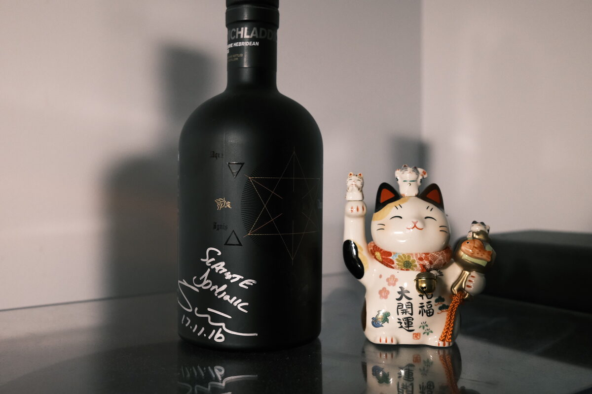

Bruichladdich "Black Art 4.1" 1990 23 years 49.2% (undisclosed)
Final dram of World Whisky Day 2021. Shared the first dram (of my first bottle) of this one back with Simon Coughlin. Anyway, Bruichladdich’s undisclosed vatting. Witches and wizardry, black magic, alchemy, major and minor arcana, thirteen black cats, so on and so forth… A rather good vintage.
Colour Dark amber.
Nose An old Aussie Shiraz: leather, tobacco, berry jams. Thick. Strawberries and cream melting over a stack of pancakes. Dried fruits: raisins, sultanas, dates. A hint of burning incense. Honey and sweet mead. Panforte and fruit mince tarts. Pastiera: Italian easter tart. Lemon curd on burnt toast. Old books. Very rich, dessert. Blueberry yoghurt, a little lactic (Laddie funk!?).
Palate Immediate attack of dried fruits, combined with an elegant acidity. Fruit mince marinating in orange juice. Some fresh white grapes. Perhaps a splash of balsamic vinegar. Thick, silky mouthfeel. Malty! Quite a spicy malt too. Cinnamon, cloves. A little bit of ginger and nutmeg. All the baking spices one can imagine. Throughout, a thick caramel and brown sugar sweetness. Quite juicy, boozy. Mulled wine. Impressive clarity.
Finish Fortified wines: port, a bit of PX. Nutty. Hazelnuts and almonds, marzipan. Dark chocolate, rum and raisin. Dried fruits of all description and a wine jelly. Berry cheesecake. Berry jams. Berry berries. A dollop of vanilla cream. Extremely long, and just as warming. The slightest hint of eucalyptus. Tangerines.
Comments Wow. Supreme integration of cask and malt. Beautiful combination of all sorts of dessert flavours. Masterful. Black magic. 93/100.

Posted by Dominic on 15 May 2021